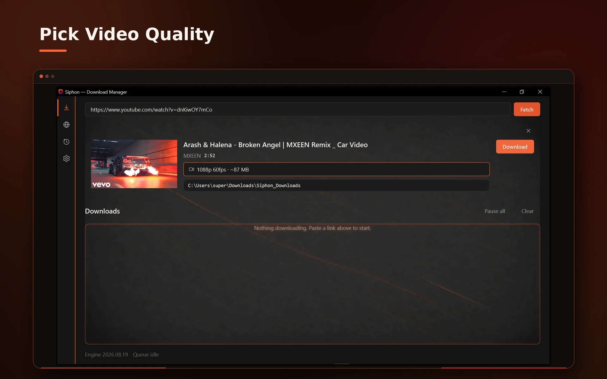
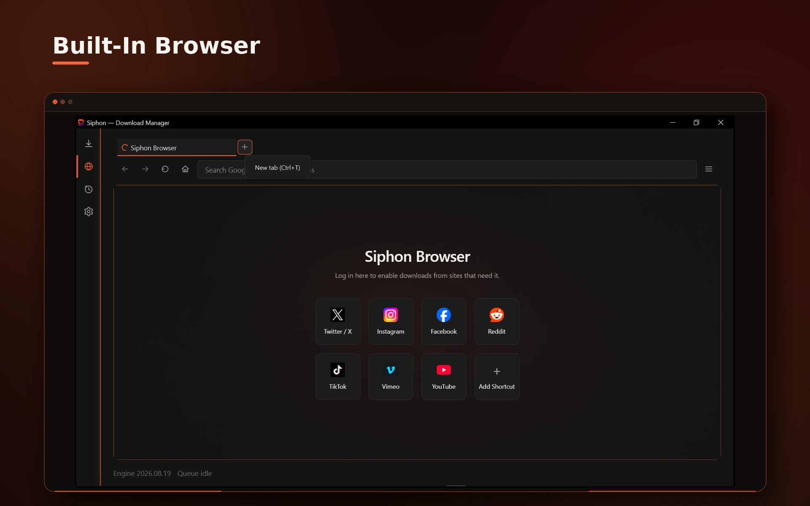
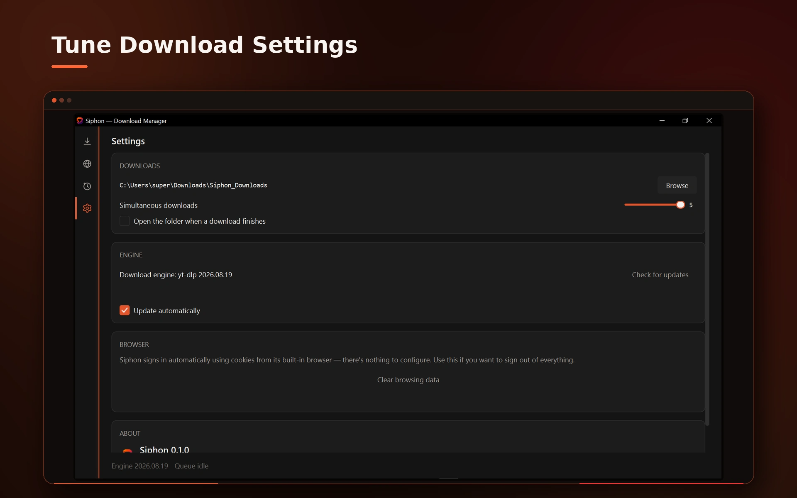
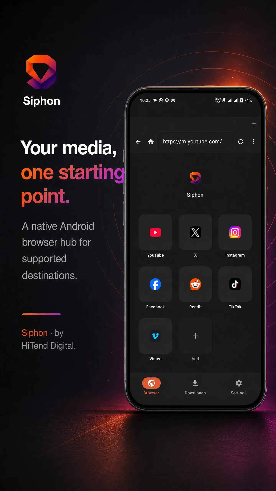
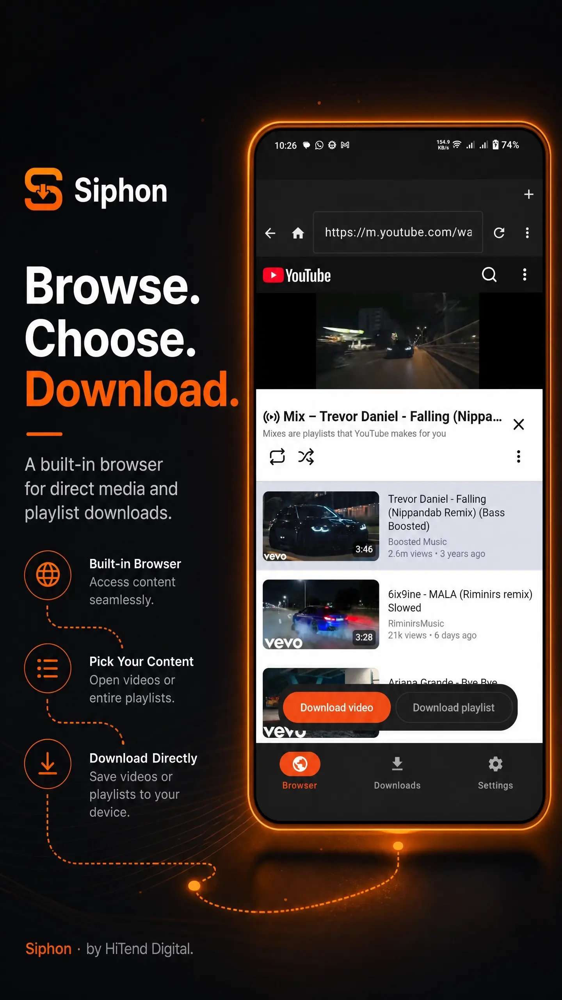
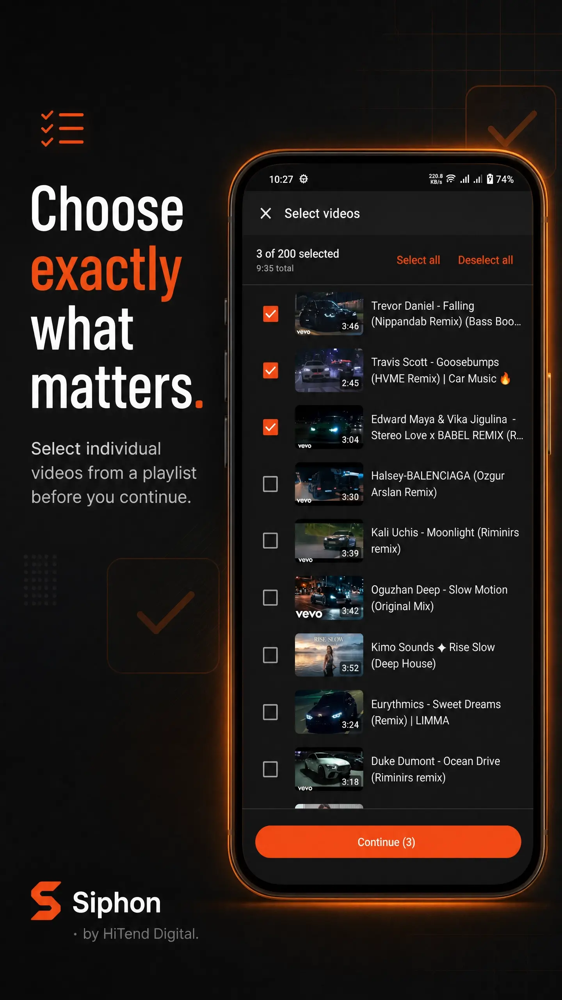
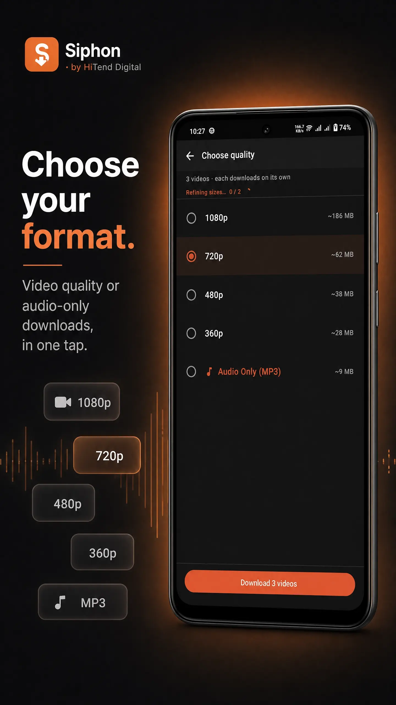
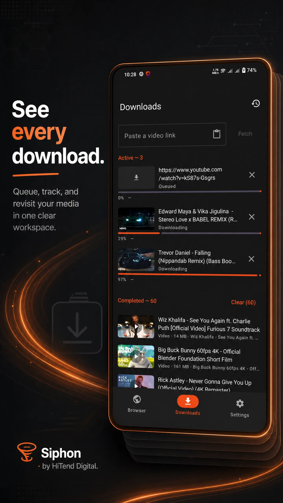
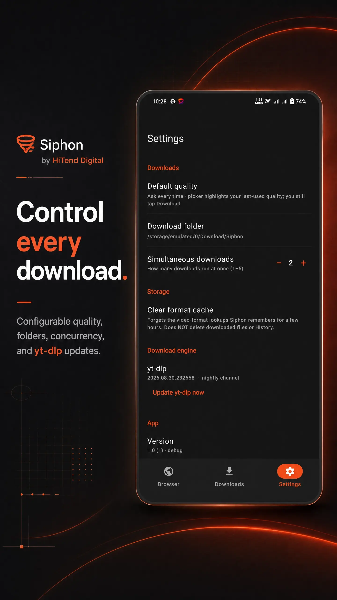

HiTend Digital
HiTend Digital

Siphon Downloader
A clean, native video downloader — built on yt-dlp, without the clutter of a browser extension or a cracked emulator workflow. Now on both Windows and Android.
What Siphon does
Siphon Downloader gives you a proper native app for saving videos, instead of routing everything through a browser tab or a sketchy site. Paste a link, pick a quality, and Siphon handles the rest — using yt-dlp under the hood for reliable, wide-ranging site support.
- Automatic quality and format selection, with manual override when you want it
- yt-dlp updates itself in the background, so support for sites stays current
- Bundled ffmpeg on Windows — no separate install, no PATH configuration
- Uses your browser's existing cookies when a site needs you to be signed in
- Built-in download history and a playlist picker for multi-video links
- Audio-only (MP3) downloads available on both platforms
Siphon is built and maintained under HiTend Digital. The Android app is distributed as a direct APK from this site rather than the Play Store, and checks for updates in the background.
Windows
Inside Siphon for Windows






Android
Inside Siphon for Android






Release history
Android versions
Older builds stay here in case you need to roll back.